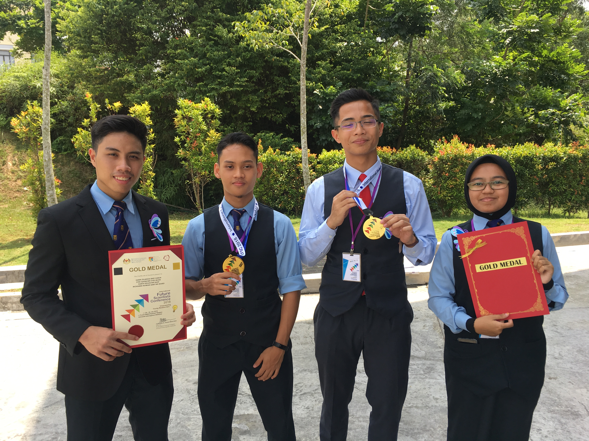

Work Experience
- Teaching Assistant for Chemical and Biological Engineering Department at UW-Madison College of Engineering (2022-current)
- Assisted professors during lectures and discussion sections for CBE250: Process Synthesis. Managed office hours to give additional help for students specifically in homeworks. Graded weekly homeworks and assignments of up to 60 students. Became a standby proctor for examinations.
- Student Supervisor at Badger Market Engineering (2022-current)
- Supervised other employees at a cafe named Badger Market at UW-Madison College of Engineering under Wisconsin Union. Responsibilities include preparing food and coffee drinks, reviewing closing balances, managing inventory and stocks, and ensuring the smooth operation of the eatery.
- Student Team Member at Strada Italian (2021)
- Cooperate with other team members at a restaurant named Strada at the Memorial Union under Wisconsin Union. Responsibilities include preparing pizzas and pastas, managing restaurant's cleanliness, and providing good customer service.
- Personal Assistant at Little Caliphs Kindergarten (2018)
- Became a teacher during my school break by conducting simple science experiment for 6 year olds. Managed the kindergarten's finance.
Research
Participated in a research study titled The Insecticide Activity of Latex from Hevea Brasiliensis on Metisa Plana along with 7 other individuals including students, mentors, and instructors. Published a research paper and awarded with a gold medal in the 2018 International Future Scientists Conference.
For more information about the research, click on this link to visit the research webpage.
Student Government
- Students Council Welfare and Facilities Exco (2016-2018)
- Conducted meetings to voice out students' opinions to college admins. Managed first aid kit and hostel facilities. Assisted hostel warden to maintain a healthy living environment. Organized an event called Give and Share where students donated used items to the needy.
- President of PERMATApintar Police Cadet (2018)
- The title says it all.
- Ronin Rugby Club Team Captain (2018)
- Played as a flanker with 10 career tries. Managed to get top 4 out of 20 in the state-level rugby tournament. Also coached juniors during my free time.